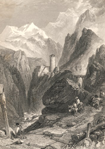

|
|
||
|
|
Home | Corson Collection | Biography | Works | Image Collection | Recent Publications | Portraits | Correspondence | Forthcoming Events | Links | E-Texts | Contact Anne of GeiersteinFirst Edition, First Impression: Anne of Geierstein; or The Maiden of the Mist. By the Author of "Waverley", &c. In Three Volumes. Vol. I (II-III). Edinburgh: Printed for Cadell and Co., Edinburgh; And Simpkin and Marshall, London, 1829. Composition | Sources | Synopsis | Reception | Links CompositionWhen Scott began work on Anne of Geierstein in March 1828, the novel had already been gestating in his mind for five years. Upon completing Quentin Durward, his tale of fifteenth-century France, in May 1823, Scott raised the possibility of a sequel in a letter to James Ballantyne. His original idea was to focus once again on the rivalry between Louis IX of France and Charles the Bold, Duke of Burgundy. Over time, however, Scott's imagination came to focus on the disastrous (and ultimately fatal) campaign waged by Charles the Bold against the Swiss Confederates. It was not until August 1827, when Scott had just completed Chronicles of the Canongate, First Series, that Scott's ideas began to take solid form. On 2 August, a letter from his publisher Robert Cadell urged Scott to attempt a continuation of Quentin Durward, a theme which 'could not fail to be popular'. Replying on 6 August, Scott promised that he would give the proposal 'careful consideration'. Well-versed in French and Burgundian history, Scott was considerably less confident on Swiss ground and asked Cadell to procure relevant works for him. Cadell promptly did so, but Scott turned instead to a Second Series of Chronicles of the Canongate consisting of The Fair Maid of Perth and the rejected tales later published as the 'Keepsake Stories'. Upon completion of the Fair Maid in March 1828, it was agreed that Scott would now press on with the Quentin sequel. It was hoped that it would generate sufficient funds to cover the considerable advances required for the illustrated 'Magnum Opus' edition of the Waverley Novels, the publishing scheme by which both Scott and Cadell hoped to repair their fortunes (see The Fall of Archibald Constable and Co.). Scott was unable to start immediately. In April and May he was in London on business, and in June and July at work on the Second Series of Tales of a Grandfather. On 6 July, however, his Journal records that he is reading the historical and descriptive works on Switzerland sent by Cadell the previous year. Composition had still not begun by August but on the 6th of that month, a letter to Cadell reveals that he is busy working out the plot of the novel in advance. He tells Cadell of his plan to introduce the Femgericht or Vehmgericht ('Secret Tribunal') of Medieval Germany, a theme with which Scott had been familiar since his discovery of German literature in the 1790s (see Sources). Scott finally appears to have begun writing in mid-September but almost immediately encountered stern criticism of the opening sequences from James Ballantyne. Even before composition began, Ballantyne had expressed concerns about Scott's ability to evoke a landscape that he had never visited. Scott had retorted that 'If I have not seen the Alps I have seen Salva[tore] Rosa's pictures of the Apennines which will do as well' (letter of 25 August 1828). Ballantyne felt, however, that the first proofs bore out his fears. Scott was sufficiently shaken by his comments to lay aside the narrative for a few days. By 15 October, however, he was back at work, having, once again, persuaded himself that his lack of first-hand knowledge of Switzerland was no insurmountable barrier. 'Had I not', he asked John Gibson Lockhart, 'the honour of an intimate personal acquaintance with every pass in the Highlands; and if that were not enough had I not seen pictures and prints galore?' (letter of 16 October). Scott pressed ahead, completing the first volume by the end of November and making good progress on the second in December. In January 1829, however, Scott suffered a bad case of writer's block, recording, for example, in his Journal for 11 January: 'I did not write above a page yesterday; most weary, stale and unprofitable have been my labours'. His efforts to breathe life into his novel were constantly thwarted by 'a perplexing sinking of the heart which one cannot always overcome'. A breakthrough finally permitted Scott to complete the second volume by 5 February, but he felt no 'great confidence that it will please' (letter to J.B.S. Morritt). Progress was initially brisk on the third and final volume but by 25 February his Journal records serious concerns about the novel's ending which he feared would be marred by an excess of historical detail. Scott's confidence was further dented by more stinging criticism from James Ballantyne received by post on 8 March. Scott once again laid aside his manuscript and threw himself into a lengthy review of Patrick Fraser Tytler's History of Scotland for the Quarterly Review. A letter from Robert Cadell on 19 March reconciled him to his novel. Cadell thought Ballantyne's criticisms excessive and judged that it would be sufficient to excise a lengthy digression on troubadours. Scott re-read the last pages of his manuscript and found it 'not so bad after all though I fear it will not be popular' (Journal, 13 April). He resumed work the next day and by 16 April he estimated that the novel was within a week of completion. With typical perversity, he again put it aside until 27 April in order to write a History of Scotland. Anne of Geierstein was finally completed on 29 April 1829. It was published in Edinburgh on 20 May and in London on 25 May. SourcesAnne of Geierstein begins in autumn 1474 and ends in January 1477 with the defeat of Charles the Bold, Duke of Burgundy at the Battle of Nancy. Quentin Durward had dramatized the conflict between Louis XI of France and Charles the Bold, the former intent on centralizing power, the latter a representative of the old feudal system where lords essentially wielded independent power over their dominions. Set in 1468, it had left the conflict largely unresolved. Now, in Anne of Geierstein, Scott concentrated on Charles's downfall and the contribution of the Swiss Confederates to his defeat. Louis XI remains in the background manipulating events. As with Quentin Durward, Scott's most important historical source was the Mémoires of Philippe de Commynes who acted as a councillor to both Louis and Charles. For basic information on Swiss history and society Scott drew on four works sent to him by Cadell : Grattan's The History of Switzerland: From the Conquests of Caesar to the Abdication of Buonaparte (1825; largely an abridgement of Joseph Planta's The History of the Helvetic Confederacy), Louis Simond's Switzerland, or, A Journal of a Tour and Residence in that Country, in the Years 1817,1818, and 1819, a French translation of Johannes von Müller's Die Geschichten der Schweizer (1780), and A. Yosy's Switzerland (1815). He may also have consulted a French translation of Johann Heinrich Daniel Zschokke's Geschichte vom Kamp und Untergang der schweizerischen Berg- und Waldkantone (1801). For Provence, Scott used Jean-Pierre Papon's Histoire générale de Provence (1777-86) and Anne Plumptre’s Narrative of a Three Years’ Residence in France (1810). For Burgundy, he may have consulted Barante's recent Histoire des Ducs de Bourgogne (1824-28). For the French scenes, Scott also drew freely on the travel journals and water-colour sketches of his close friend James Skene of Rubislaw. Skene was a source too for Scott's depiction of the Vehmgericht via a paper he had read to the Society of Antiquaries of Scotland in 1824. Scott asked Skene for a copy of his paper and was obviously struck by Skene's (contentious) description of the Tribunal's underground chambers at Baden and the shaft down which the accused were lowered for trial. Scott, though, had first read of the Vehmgericht in the 1790s where it featured prominently in a number of the new German works of literature which so excited Scott and his friends. These included Goethe's Götz von Berlichingen which Scott translated in 1799 (see Literary Beginnings) and Christiane Benedicte Eugenie Naubert's Hermann von Unna and Alf von Dulemen (both translated into English in 1794). Scott himself had sought to contribute to the popularity of the theme with his 1797 drama The House of Aspen (loosely based on Veit Weber's Die Heilige Vehme) but it remained unperformed and unpublished until 1830. While working on Anne of Geierstein, Scott updated his knowledge of the Vehmgericht with solid historical reading including Carl Philipp Kopp's Über die Verfassung der heimlichen Gerichte in Westphalen (1794), François Adolphe Loève-Veimars's Précis de l’histoire des tribunaux secrets, dans le nord de l’Allemagne (1824), and Paul Wigand's Das Femgericht Westphalens (1825).
SynopsisThe novel is set shortly after the battle of Tewkesbury (1471), in which the Yorkist king Edward IV had finally defeated the Lancastrian party. Two exiled Lancastrians, John de Vere, the Earl of Oxford and his son, Arthur, are travelling through Switzerland disguised as merchants and under the assumed name of Philipson. Carrying the diamond necklace of Margaret of Anjou, they are on a mission to convert Charles the Bold, Duke of Burgundy, to the Lancastrian cause. Caught by a storm in the mountains, they find refuge in the home of Arnold Biederman, chief magistrate of Unterwalden. Biederman has relinquished his hereditary title of Count of Geierstein in favour of his brother Albert. His niece, the young Countess Anne, lives under his protection, and rescues Arthur from death when attacked by vertigo on an Alpine ledge. She and Arthur fall in love but, fearing family opposition, Anne treats him with reserve. Biederman too has business with Charles the Bold as part of a delegation sent to protest against the treatment the Swiss have received at his hands. The Philipsons and Biederman set out in company but are seized and imprisoned by Archibald of Hagenbach, employed by Charles the Bold as governor of the citadel of Brisach. They are saved from death only when the citizens of Brisach rebel against their oppressor and de Hagenbach is executed by order of the Vehmgericht (Secret Tribunal). After the party finally reaches the Duke's court, the plot chiefly concerns the Earl of Oxford's efforts to win Charles the Bold's support for Margaret of Anjou and Lancaster. The negotiations are interrupted by the Duke's disastrous military campaign against the Swiss (whose overtures he has rejected) and his eventual death and defeat at the battle of Nancy. The Philipsons/de Veres return to Geierstein, where marriage is celebrated between Arthur and Anne. ReceptionBoth Ballantyne and Scott had serious doubts about Anne of Geierstein and were therefore pleasantly surprised to find that the novel sold well especially in England. Along with The Fair Maid of Perth, Anne of Geierstein was Scott's most commercially successful novel after 1825. The reviews too were, on the whole, highly favourable but some journals (notably the Edinburgh Literary Gazette, the Examiner, and the Westminster Review) felt that the factual elements of the plot were much more interesting than the purely fictional, and that the attempt to blend romance and history was, in this case, unsuccessful. Links
Last updated: 19-Dec-2011 |
|